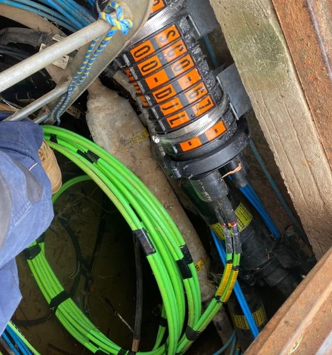

Specialized Solutions
Special Projects
Precision-engineered deployments for high-density environments, indoor coverage, and advanced network architectures.

Project Expertise
- Small Cells & Dot Projects: High-density urban and indoor connectivity solutions.
- IBC & DAS: In-Building Coverage and Distributed Antenna Systems deployment.
- Carrier Infrastructure: Telstra BBH and Ericsson 5G IBC specialized implementations.
- Network Architecture: Comprehensive MTX work for DRAN/CRAN and complex small-cell site integration.
- ESS Projects: Strategic energy and infrastructure support systems.